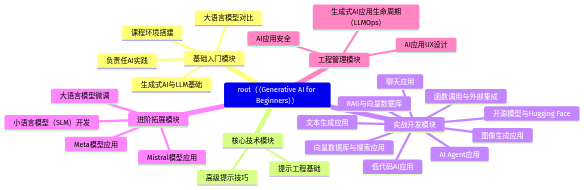

十万星标顶流！微软官方生成式AI入门全指南解析
一、项目基本信息
项目地址：https://github.com/microsoft/generative-ai-for-beginners
⭐️ Stars：105601 🍴 Forks：56526 🔧 开发语言：Jupyter Notebook 📄 开源协议：MIT十 万+星标、五万+复刻量，足以证明这是全球最受欢迎的生成式AI入门项目之一，堪称新手入 门的"黄金教程"！
二、项目概要
这是微软云打造的21课生成式AI全体系入门课程，专为零基础或有初步编程基础的学习者设计。课程分为"Learn"概念讲解与"Build"实战开发两类，每课配套短视频、详细文档、Python与TypeScript双语言代码示例，覆盖从生成式AI基础概念、大语言模型原理到文本生成、聊天应用、RAG、AI Agent等实战场景，还提供50+语言自动翻译版本，同时包含负责任AI、LLMOps等实用内容，帮助学习者从理论到实践全面掌握生成式AI应用开发技能，快速上手搭建自己的AI应用。
三、核心痛点解决
针对生成式AI入门学习者面临的"知识零散无体系""缺乏从理论到实战的完整指引""不同技术栈资源不足""忽略AI伦理与工程化管理"等痛点，该项目提供结构化的全路径课程，兼顾理论深度与实践可操作性，双语言代码降低不同技术栈开发者的入门门槛，多语言翻译覆盖全球学习者，同时补充负责任AI、LLMOps等易被忽略的重要内容，让学习者不仅会用AI，更能合规、高效地开发AI应用。
四、主要功能特性
五、技术架构体系
该项目是结构化的课程体系，以下是课程模块思维导图：

六、适用场景领域
七、同类竞争优势
对比同类生成式AI入门项目，该项目的核心优势在于：
八、目标受众群体
九、快速上手示例
以第6课的文本生成应用为例，使用OpenAI API实现简单的文本生成功能：
1. 安装依赖
pip install openai python-dotenv2. 配置API密钥
创建.env文件，写入你的OpenAI API密钥：
OPENAI_API_KEY=你的OpenAI API密钥3. 编写Python代码
# 导入所需库from openai importOpenAIfrom dotenv import load_dotenvimport os# 加载环境变量中的API密钥load_dotenv()# 初始化OpenAI客户端client =OpenAI(api_key=os.getenv("OPENAI_API_KEY"))def generate_text(user_prompt):"""调用OpenAI API生成文本内容:param user_prompt:用户输入的提示词:return:生成的文本结果或错误信息"""try:# 调用gpt-3.5-turbo模型生成文本response = client.chat.completions.create(model="gpt-3.5-turbo",# 系统角色定义AI的行为，用户角色传递提示词messages=[{"role":"system","content":"你是专业的文案助手，输出内容清晰有条理"},{"role":"user","content": user_prompt}])# 提取并返回生成的文本return response.choices[0].message.content.strip()exceptExceptionas e:return f"生成失败: {str(e)}"# 测试文本生成功能if __name__ =="__main__":test_prompt ="写一篇200字左右的生成式AI入门介绍短文"result = generate_text(test_prompt)print("生成结果：\n", result)
运行代码后，即可得到基于提示词生成的专业文本内容，快速体验生成式AI的核心能力。